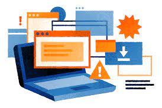
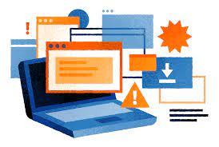

Online Security
Different Types of Harms
| VIRUS | WORM | TROJAN HORSE | ADWARE | SPYWARE |
|---|---|---|---|---|
| Non self replicating | Self replicating | Non self replicating | Non self replicating | Non self replicating |
| Produce copies of themselves using host files as carriers | Do not produce copies of themselves using host files as carriers (independent program) | Produce copies of themselves using host files as carriers | Produce copies of themselves using host files as carriers | Produce copies of themselves using host files as carriers |
| Cannot control PC remotely | Cannot control PC remotely | Can control PC remotely | Cannot control PC remotely | Cannot control PC remotely |
| Can be detected using antivirus | Can be detected using antivirus | Sometimes cannot be detected using antivirus | Can be detected using anivirus, anti-adware | Can be detected using antivirus, anti-malware |
 

Data Backup

The purpose of the backup is to create a copy of data that can be recovered in the event of a primary data failure. Primary data failures can be the result of hardware or software failure, data corruption, or a human-caused event, such as a malicious attack (virus or malware), or accidental deletion of data. Backup copies allow data to be restored from an earlier point in time to help the business recover from an unplanned event. We shoud backup our data for the following reasons:
-
Data Loss Prevention
We’ve all heard about or experienced a tragic loss of data. The main reason for data backup is to save important files if a system crash or hard drive failure occurs. -
Operation Plan B
There should be additional data backups if the original backups result in data corruption or hard drive failure. This option is best done via the cloud or offsite storage. Additional backups are necessary if natural or man-made disasters occur. Storms and warfare can lead to the destruction of servers and computers due to fires and floods. Luckily, we are in the age of cloud technology, where backup your data has become easier and more secure than ever before. -
Saving Time
If you have a data loss, you will have to work to fix it. This might be as annoying as having to rewrite an important email because your computer crashed right before you hit sent, or as serious as rebuilding your entire client database. While you or your employees are working on data recovery, you are not working on the core of your business. Some companies might have to redo everything. Literally everything – and few businesses survive that. -
Data loss can occur at any time and for all kinds of reasons
This might include crashes, malware, physical damage or failure, theft, or basic user error. If you claim you have never deleted a vital file by mistake then you are probably lying or seldom use a computer (there is a reason deleted files go to a trash folder before vanishing completely). Laptops make you particularly vulnerable – they can be damaged or stolen, especially while traveling. Incremental backups allow you to restore either specific files or your entire system easily.
Tips on how to backup data
- Regularly backup your data at leats once a month
- Save it online (on cloud)
- Save it on external harddisk for safety reasons
- Ensure tht data usage is working properly and to ensure tha=e proper working of back up restore it often.
A few friendly tips

Here are some friendly tips to hlp you make your laptop safer:
- Keep your Anti-virus up to date and frequently scan your laptop/moblie
- Change your passwords regularly and keep the passwords that are difficult to guess. Don't keep any personal information (pets name, family realted, personal information) as a password they are easy to guess. the more random the pssword the better it is as it is more difficult to guess.
- Do not open email from unknown sources
- Do not donload any thing from risky websites
- Close laptop when not in use
- Regularly Backup your data
Digital footprint
What is Digital Footprint?
If you are on social media sites like instagram, snapchatt, facebook etc or shopping online, or using the search engine you have a digital footprint.
Digital foot print is the trail of data left behing when you are using digital services. Anything we do online become sa part of or digital footprint. It stays forever and can be accessed by people anytime. Even if you have deleted a post the photo or video will always be accesible to people if they do a little research.
We should know about digiltal footprint as is may define who we are and our professional life can depend on it. Our employers may go through our account to know more about us and if we are a good fit for this company.
How Can We Manage Our Digital Footprint
It is important to maintain a good digital footprint because if anyone look you up on the internet your digital footpprint will be accesible to them. Here are a few things that might be helpful in making a good digital footprint
- Put a good password annd the right security settings on all your social media account (What is good passowrd is mentioned above in the subheading: A Few Friendly Tips). If you do not put a good password, your account will get hacked easily and this may hamper your digital footprint
- You should search yourself regularly and see if there i any unwanted data or metion of you. If there is any unwanted data contact the right authorities and make sure it is taken down.
- Be carefull of what you post. Do not post anything that is unwanted. Also make sure you are minduful even while posting from different accounts. People can take data from diiferent accounts and corelate it.